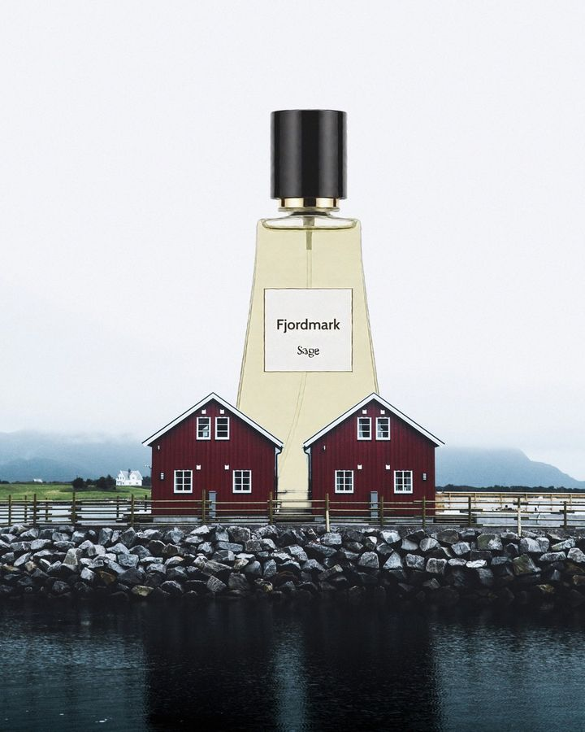
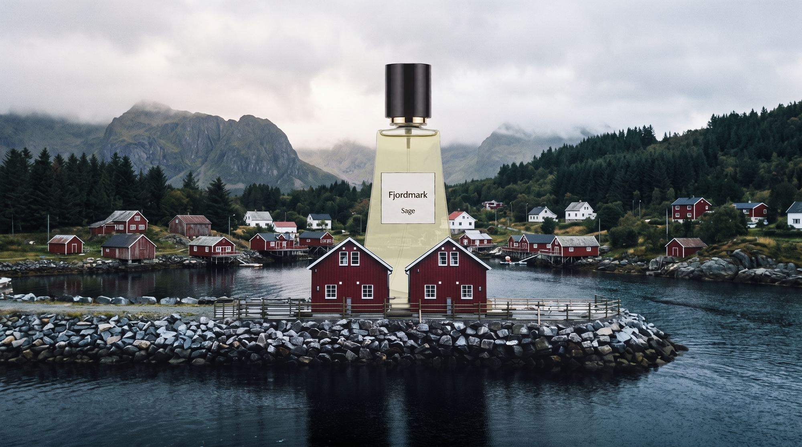
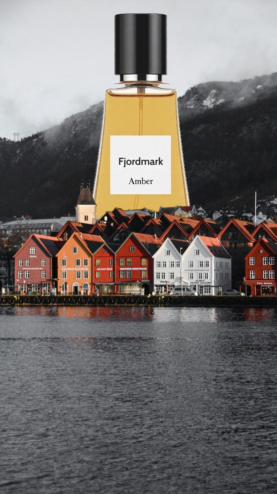
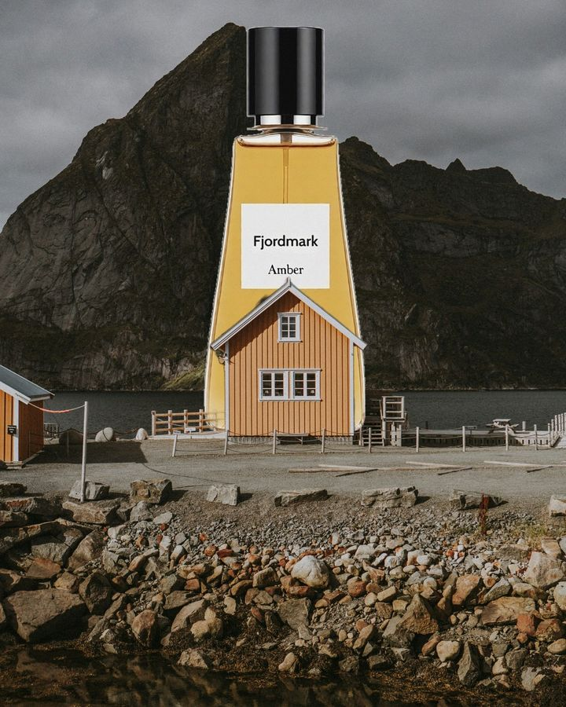
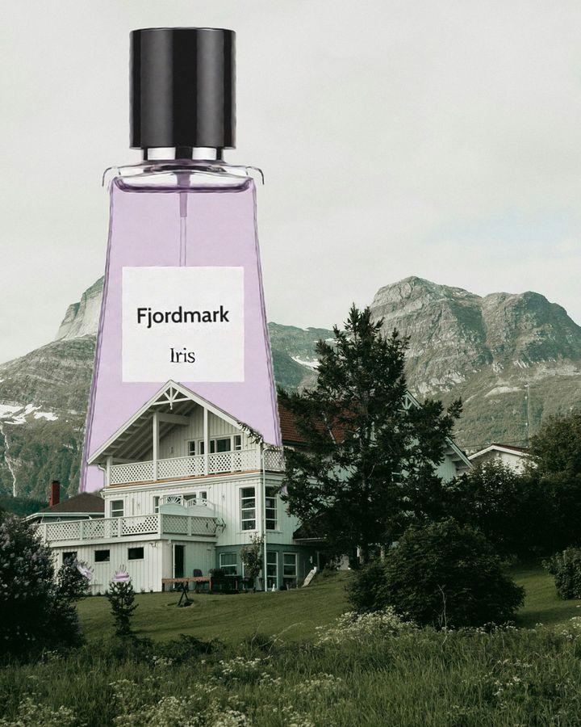
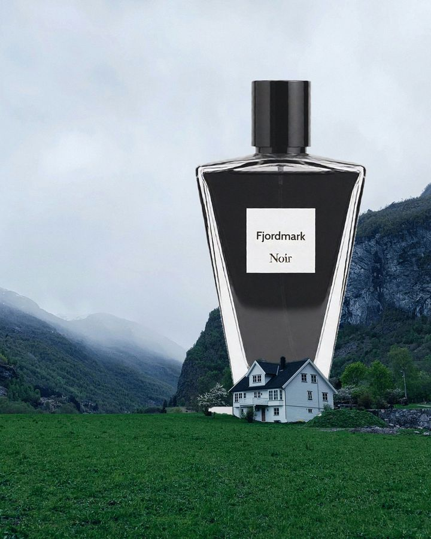

Sage
Fris en groen, zoals een dennenbos. Goed voor overdag.

Nieuw parfummerk · 4 geuren
Voor mensen die liever op een wandelpad staan dan in een winkelcentrum. Denk aan een dennenbos, een houten hut en een kampvuur, maar dan op je huid.

Het verhaal
Op een regenachtige dag in Noorwegen liepen we langs een rij rode houten huisjes aan het water. Achter de huisjes begon het bos, en daarachter de berg. Het rook naar natte dennen, hout en een beetje rook van een kachel. Die geur wilden we mee naar huis nemen.
Dat werd Fjordmark. Geen glitter of gouden doppen, gewoon geuren die je doen denken aan buiten zijn. Daarom zie je onze flesjes ook altijd tussen Noorse huisjes staan, en niet in een glazen etalage.
We maken het voor wandelaars, kampeerders, mensen die vroeg opstaan om de zon te zien opkomen, en eigenlijk voor iedereen die zich beter voelt na een uur in het bos.
“Na een regenbui ruikt het bos het lekkerst. Dat wilden we in een flesje.”
De geuren

Fris en groen, zoals een dennenbos. Goed voor overdag.

Warm, met hars en hout. Voor koude dagen.

Fris met iets zoets van bessen. Het lekkerst na een regenbui.

Donker en een beetje rokerig. Voor 's avonds.
Wachtlijst
Schrijf je in voor de wachtlijst. Je hoort als eerste wanneer Fjordmark te koop is, en je kan een gratis staaltje aanvragen.
We gebruiken je naam en e-mailadres alleen om je mails over Fjordmark te sturen. We verkopen niets door. Lees onze privacyverklaring.